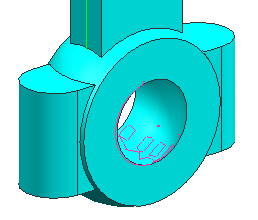
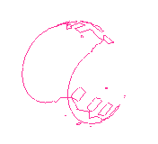

查看现有的间隙集
-
选择分析→装配间隙→间隙集→设置。
设置间隙集对话框列出 ALL 和 TEST_RUN_1。
-
选择 TEST_RUN_1。
-
点击确定。
间隙浏览器列出用于 TEST_RUN_1间隙集的干涉。
-
选中包含 des06_mach_3_8和 des06_mach_3_9间干涉的复选框。
该干涉牵涉的组件被隔离，以便您可以仔细研究它们。

-
在间隙浏览器中，使用隐藏与显示命令来查看这两个组件的干涉。



-
在间隙浏览器中，清除包含 des06_mach_3_8与 des06_mach_3_9间干涉的复选框。
装配显示在图形窗口中。